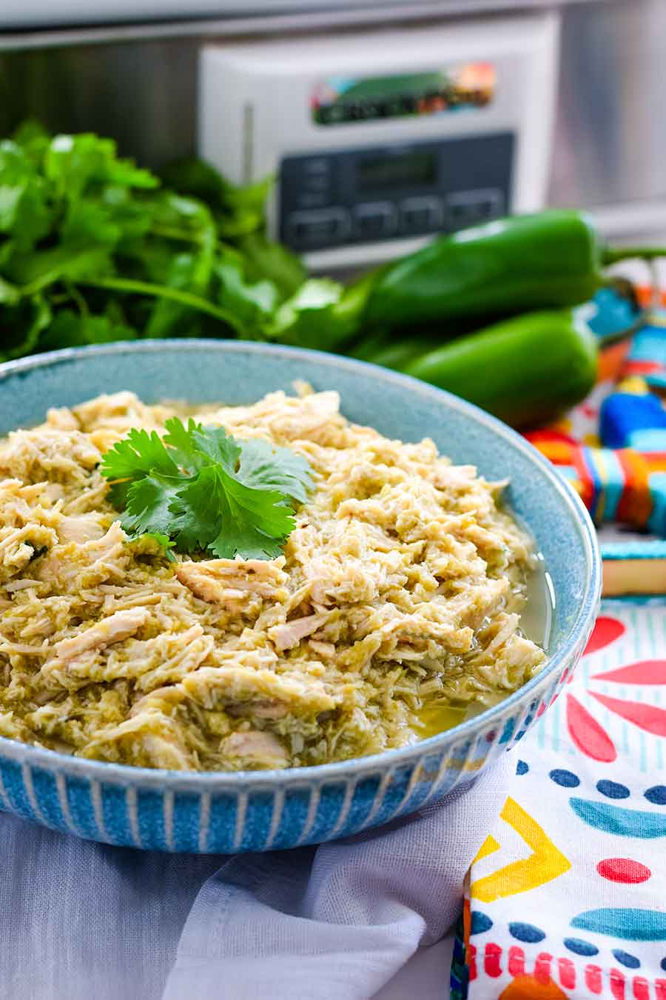

This is one of my goto recipes when I'm trying to meal prep while tracking my macros. On the first day it's delicious. Subsequent days its probably a little dry so adding a little sauce brings it right back to being amazing. I usually would some Guac salsa or some Srichacha.
Typically, I'll just add this on top of some brown rice and eat it with brocolli. It gets the job done throughout the week as I'm fueling for performance at the gym.